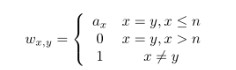

BZPRO
#3860. Permanent
内存限制：64 MiB
时间限制：7 Sec
提交
提交记录
讨论
题目描述
Teacher Mai has solved the #P complete in polynomial time recently.
So he gives this task to you. You are given a matrix of n rows and n columns, you should calculate the permanent of this.
But this matrix is special, nearly all the elements are 1. Only the cells on the main diagonal are modified.
You are given n integers ai. You should calculate permanents of m matrices. The size of i-th matrix is n+i-1.
In i-th matrix,

The number can be very large, just output the number modulo 998244353.
If you don't know what is the permanent of a matrix, please click http://en.wikipedia.org/wiki/Permanent or http://baike.baidu.com/view/8212164.htm
输入格式
There are multiple test cases, terminated by a line "0 0".
For each test case, the first line contains two integers n,m(1<=n,m<=10^5).
The following one line contains n integers ai,(0<=ai<=10^6).
输出格式
For each test case, first output one line "Case #k:", where k is the case number counting from 1.
The following k lines contains a integer, indicating the permanent of the i-th matrix.
样例
样例输入
3 2
2 3 3
0 0
样例输出
Case #1:
28
46
数据范围与提示